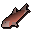
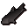

Salmon
| Config name | salmon |
| Item id | 329 |
| Value | 50 gp |
| Weight | 500g |
| Members | No |
| Tradeable | Yes |
| Stackable | No |
| Options | Eat |
| Defined in | scripts/skill_fishing/configs/fishing.obj |
Salmon
Some nicely cooked fish.
How to make
| Skill | Level | XP | Ingredients | Tool | How | Where | Makes |
|---|---|---|---|---|---|---|---|
| Cooking | 25 | 90.0 |  Raw salmon | use on object | range or fire | 1 can spoil into  Burnt fish |
Sold at
| Shop | Shopkeeper | Stock |
|---|---|---|
| West Ardougne General Store | 10 |
Quests
Family Crest Gertrude's Cat Underground Pass
Referenced in scripts
scripts/_test/scripts/cheats/cheat_bank.rs2scripts/levelup/scripts/levelup_unlocks_cooking.rs2scripts/quests/quest_crest/scripts/crest_caleb.rs2scripts/quests/quest_crest/scripts/crest_journal.rs2scripts/quests/quest_fluffs/scripts/pet.rs2scripts/quests/quest_fluffs/scripts/quest_fluffs.rs2scripts/quests/quest_upass/scripts/quest_upass.rs2scripts/skill_fishing/scripts/fishing_spots/freshfish.rs2